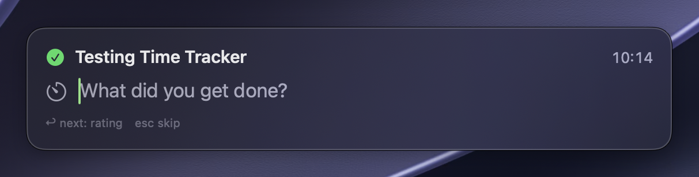

Know where your day went.
A tiny Mac app that lives in your menu bar. Press one shortcut, type what you're working on, and it keeps the time for you.
Download for Mac See how it works
The quick panel: press the shortcut, type a task or a command.
Three steps. No timesheets.
Tracking only works if it takes seconds. So that's all it takes.
Press the shortcut
Cmd Shift Return from any app opens a small search-style box.
Type your task
Write what you're about to do and press Return. The timer starts in your menu bar.
Stop and reflect
When you're done, note what you got done and rate it 1 to 5. Or skip it.


Stopping asks two quick questions. Press Esc to skip either one.
Everything you need, nothing you don't
Built to stay out of your way until you need it.
Gentle reminders
Forgot to start the timer? During your work hours, it nudges you. Set how often, or turn it off.
Notices when you're away
Walked off with the timer running? When you're back, keep the time, remove it, or end the session when you left.
Check-ins
An optional "still on this?" ping while you work, so a forgotten timer doesn't run all afternoon.
History you can fix
Every session grouped by day with totals. Search, filter by rating, and edit anything later.
Pause and switch
Pause for lunch, rename a task, or jump straight to the next one without stopping first.
Private, synced by iCloud
Your data stays in your own iCloud and follows you across your Macs. Nothing goes anywhere else.
See every day at a glance
Sessions grouped by day with totals and ratings. Search, filter, and fix anything later.

Start tracking in under a minute
Download, drag to Applications, press the shortcut.
Download for Mac